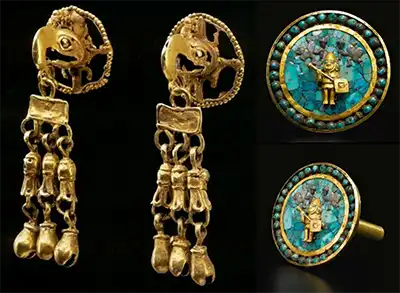

Jewelry History

The connection between ancient stelas and modern jewelry lies in their geometry. Just as the ancients carved limestone into precise pillars, modern jewelry relies on the geometric precision of the diamond.
The Mixtec Masters (900 – 1521 AD)
There is significant evidence that the Mixtec people of ancient Mexico were the most skilled goldsmiths in the Americas. They mastered the "lost-wax" casting technique to create gold jewelry that mirrored ceremonial monuments.
The Heart of the Craft: Guadalajara
Guadalajara remains the heart of Mexico's jewelry industry in 2026. It serves as the main gateway for Mexican gold and silver to reach international markets, including our headquarters in Los Angeles.
Ancestral Materials
Ancient craftsmen utilized a specific set of materials found within the Oaxaca Valley and coastal regions:
- Native Gold and Silver
- Jadeite and Greenstone
- Turquoise Inlays
- Spondylus (Sea Shells)
Technique Definitions
- Lost-Wax Casting
- An ancient process where a duplicate metal sculpture is cast from an original wax carving.
- Mestizo Jewelry
- A unique design style blending Spanish filigree with indigenous Mexican gold casting.